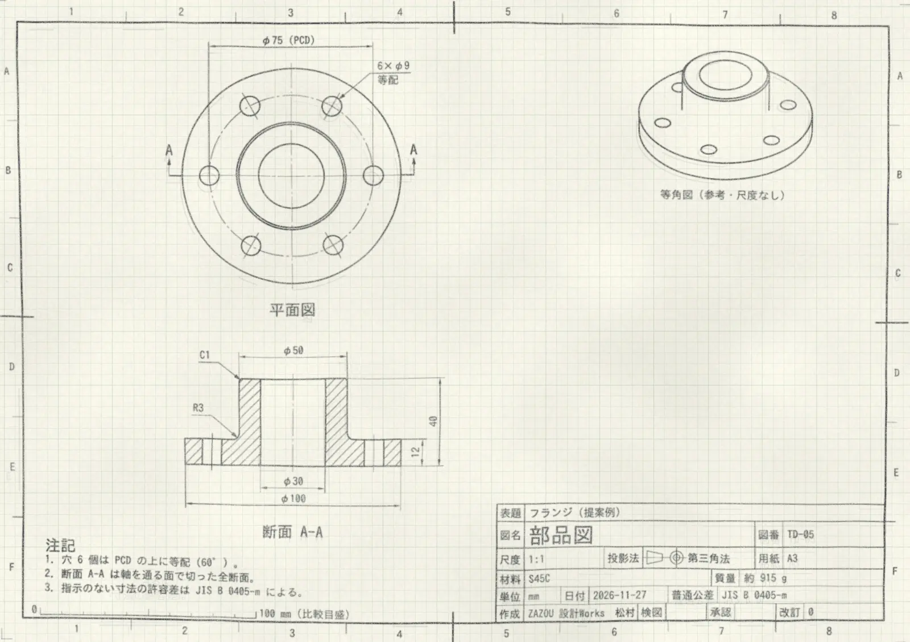
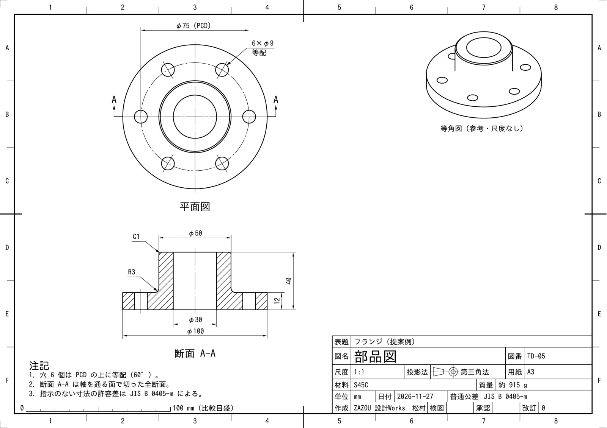
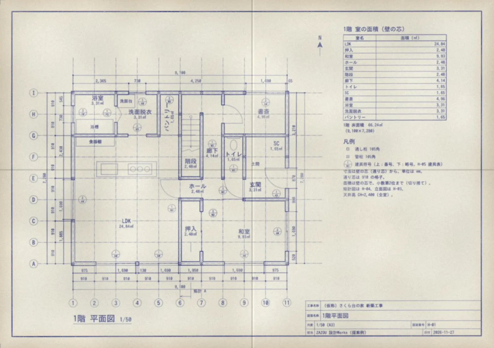
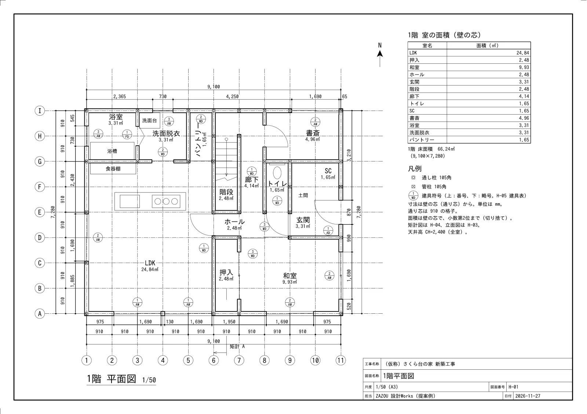
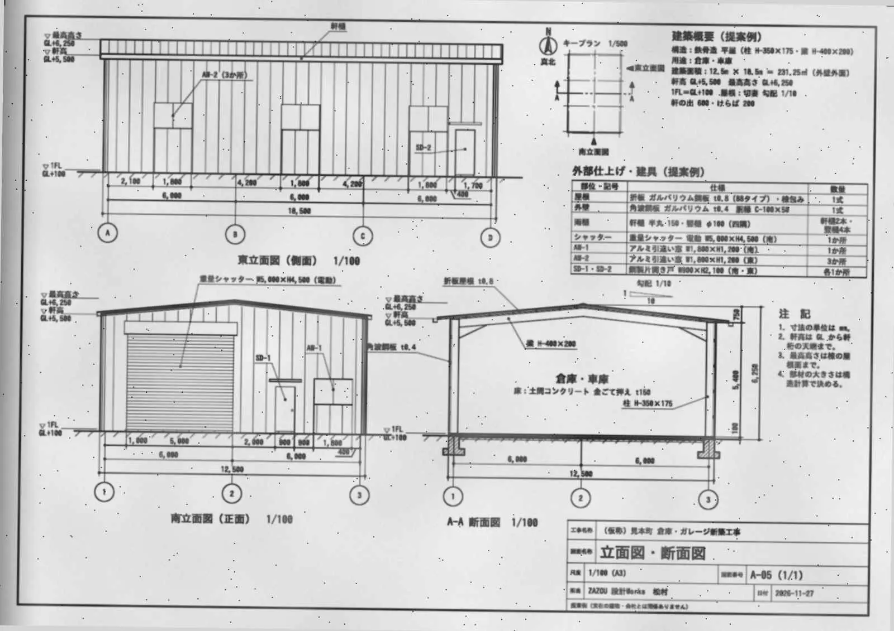
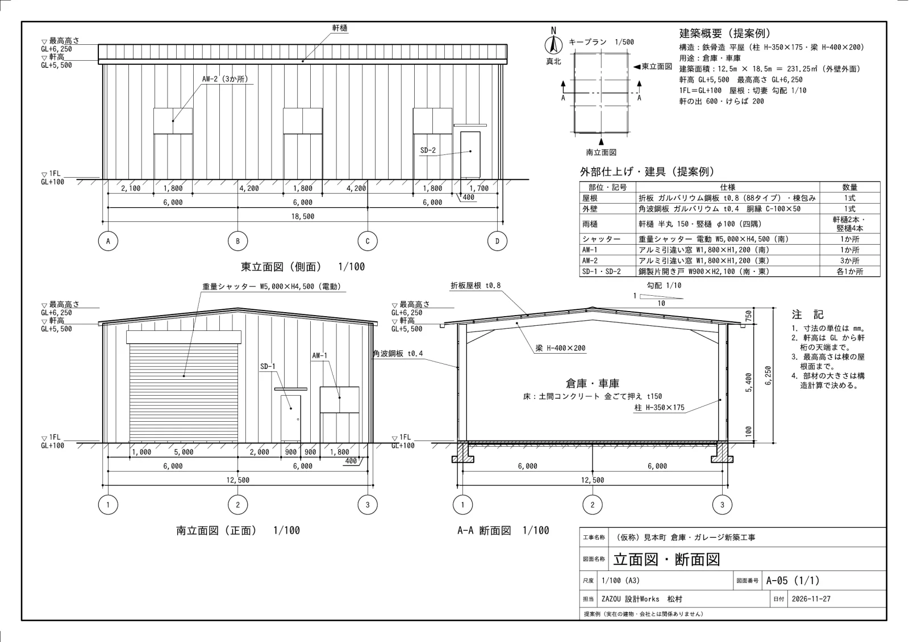
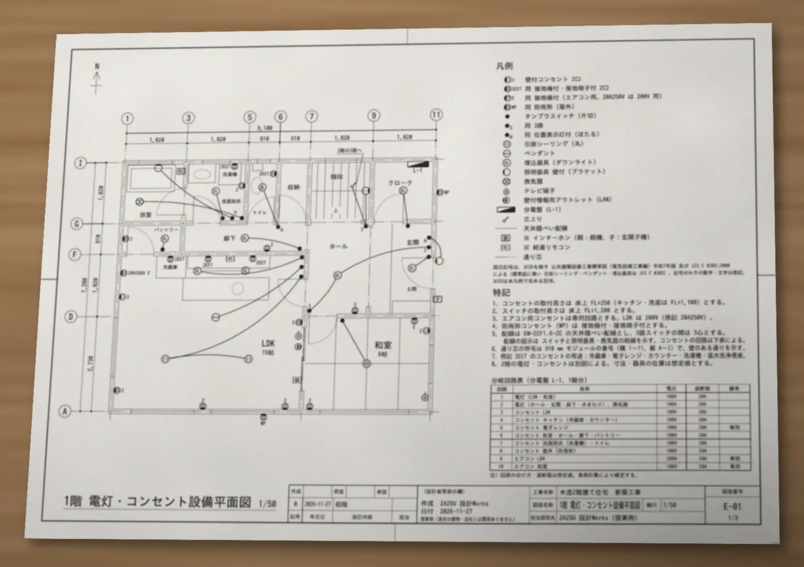
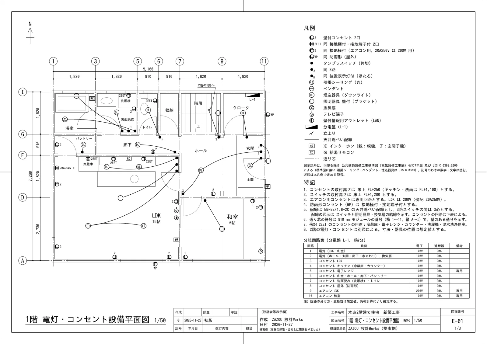

- 提案例（架空の図面）
- 手書き・青焼き・スキャン
- DXF・JWW・PDF
図面トレースの
ビフォー・アフター
手書き・青焼き・スキャン・スマホの写真の図面を、CADで描き直した見本です。
どれも当方で作った架空の図面（提案例）で、お客様の図面ではありません。
図面のトレースは 1枚 6,000円。
どんなお悩み事もご相談ください。
Summary
このページの要点
- 見本の数
- 4つ（機械の部品図・建築の平面図・倉庫の立面図と断面図・電気設備の平面図）
- ビフォー
- 手書き（方眼紙に鉛筆）・古い青焼き・コピーのスキャン・スマホの写真
- アフター
- CADで描き直した図面。
DXF・JWW・PDF を開いて確かめられます - 日数の目安
- 1枚で 1〜2日ほど（例。実際の納期は図面を拝見してからお知らせ）
- 料金
- 図面のトレースは 1枚 6,000円（お見積りは無料）
Before / After
紙の図面と、CADで描き直した図面（提案例）
左（スマホでは上）がビフォー、右（スマホでは下）がアフターです。
どれも当方で作った架空の図面で、お客様の図面ではありません。
ビフォーは、アフターの図面を、手書き・青焼き・スキャン・写真のように加工した画像です。
画像を押すと拡大します。
機械の部品図（フランジ）提案例（架空の図面）


建築の平面図（木造2階建て住宅 1階）提案例（架空の図面）


倉庫・ガレージの立面図・断面図提案例（架空の図面）


電気設備の平面図（電灯・コンセント）提案例（架空の図面）


Table
見本の目安の一覧
| 見本 | 元の図面 | 枚数 | 日数の目安（例） | 納品の形式 |
|---|---|---|---|---|
| 機械の部品図（フランジ） | 方眼紙に鉛筆で描いた手書きの図面 | 1枚（A3） | 例：1日ほど | DXF（AutoCAD向け・Jw_cad向け）・JWW・PDF |
| 建築の平面図（木造2階建て住宅 1階） | 古い青焼きの図面（色あせ・折り目あり） | 1枚（A3、1/50） | 例：1〜2日 | DXF（AutoCAD向け・Jw_cad向け）・JWW・PDF |
| 倉庫・ガレージの立面図・断面図 | コピーを重ねた図面をスキャンしたPDF（傾き・かすれ・ごみあり） | 1枚（A3、1/100） | 例：1〜2日 | DXF（AutoCAD向け・Jw_cad向け）・JWW・PDF |
| 電気設備の平面図（電灯・コンセント） | 机の上の図面をスマホで撮った写真（斜め・明るさのむらあり） | 1枚（A3、1/50） | 例：1〜2日 | DXF（AutoCAD向け・Jw_cad向け）・JWW・PDF |
日数は、資料がそろっていて、ご質問へのお返事をすぐいただけた場合の例です。
実績の数字ではありません。
実際の納期は、図面を拝見してから先にお知らせします。
FAQ
見本についてのよくある質問
この見本は、お客様の図面ですか？
いいえ。
どれも当方で作った架空の図面（提案例）です。
ビフォーは、その図面を手書き・青焼き・スキャン・スマホの写真のように加工した画像です。
日数の目安は、必ずその日数で仕上がりますか？
日数は、資料がそろっていて、ご質問へのお返事をすぐいただけた場合の例です。
実際の納期は、図面を拝見してから先にお知らせします。
料金はいくらですか？
図面のトレースは1枚 6,000円です。
図面の大きさや枚数、お急ぎの場合の扱いは、ご相談ください。
お見積りは無料です。
見本のファイル（DXF・JWW・PDF）を開いて確かめてもいいですか？
はい。
アフターの図面は、DXF・JWW・PDF で開いて、レイヤーや線の太さを確かめていただけます。
Company
会社概要
| 会社名 | ZAZOU株式会社 |
|---|---|
| 部門 | ZAZOU 設計Works（機械設計／建築・土木／設備設計） |
| お受けする仕事 | 図面のトレース（PDF・画像・手書き・古いCADの図面から、CADデータに）、数量拾い・積算 |
| 代表 | 代表取締役 松村 貴士（運営者について） |
| 設立 | 2020年6月 |
| 所在地 | 滋賀県蒲生郡日野町 |
| 対応地域 | 全国（在宅・オンラインで対応） |
Contact
ご相談・お問い合わせ
図面1枚のトレースから、お気軽にどうぞ。
お見積りは無料です。
DXFの文字化けも修正します。
どんなお悩み事もご相談ください。

図面のPDFや写真がある場合は、メールが便利です。
matsumura.takashi@zazoucorp.com